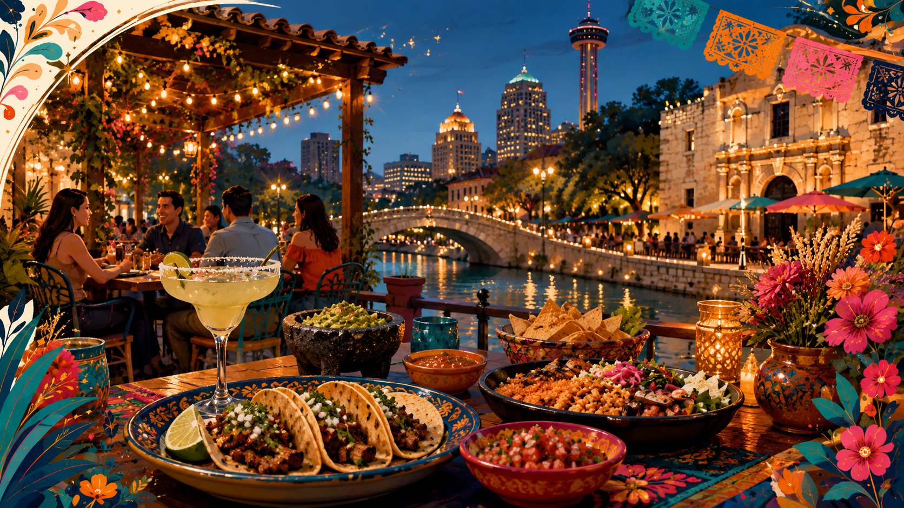

Tex-Mex + Steak
Reliable picks for visitors who want strong first impressions.
Where To Eat
Use this guide for real Tex-Mex, steak, BBQ, Italian, seafood, Pearl dining, drinks, and breakfast options.

Reliable picks for visitors who want strong first impressions.
Premium local atmosphere with walkable add-on stops.
Soluna is a favorite. Also strong: La Fonda, La Fogata, Rosario’s, Domingo, and Acenar downtown.
Skip tourist-trap picks when you can.Bohanan’s for downtown classic, J-Prime for north-side upscale, and Ruth’s Chris for safe familiar meetings.
Pinkerton’s downtown, plus 2M and Reese Bros for visitors who want serious local BBQ.
Paesanos River Walk, Nonna Osteria, and Battalion for strong downtown and Southtown options.
Brasao first, Chama Gaucha second, Fogo de Chao third for larger group dinners.
El Bucanero is a top ceviche move. El Cevichero and Leche de Tigre are also strong.